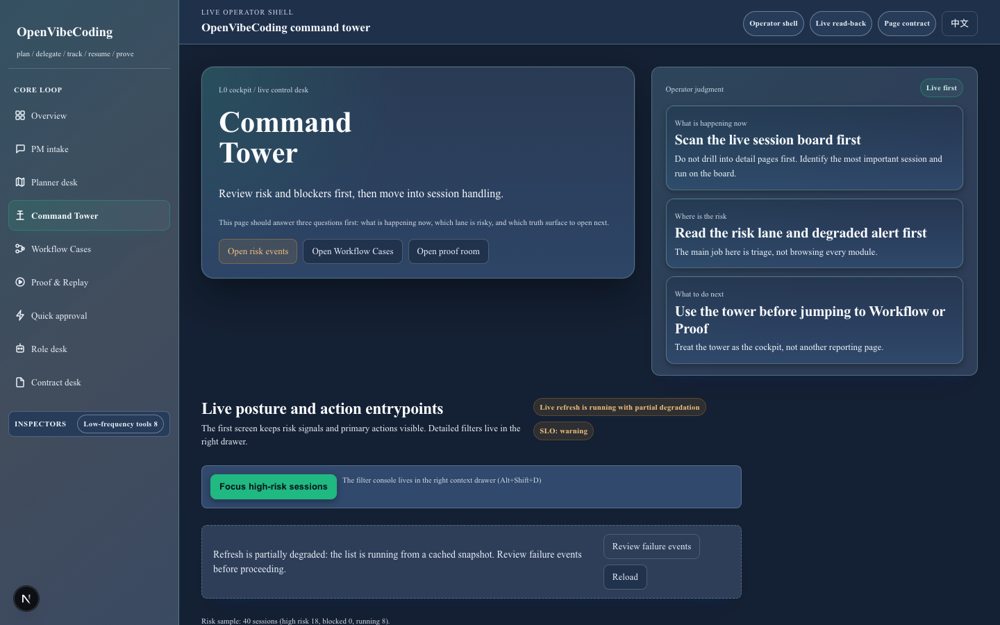

Start with one visible workflow and one proof trail before deciding whether the stack fits your team.
See every AI coding run on one live board.
OpenVibeCoding turns one request into one visible workflow case and one proof trail you can inspect before you trust the result.
Think of OpenVibeCoding as the place where one long AI coding job stays visible from request to proof. Today you can use the repo, docs, the macOS desktop shell, and the read-only MCP lane to inspect the same run.
Need the stack map instead of the shortest proof story? Choose the right adoption path.

Live board read-back: queue posture, blocker risk, and proof-ready state stay visible instead of hiding behind shell output.
Watch the command-tower teaser first if you want the shortest product read before opening deeper docs and matrices.
Read the teaser transcript
Stop babysitting AI coding work. AI coding does not lack models. It lacks a command tower. OpenVibeCoding turns one request into one live board and one proof trail you can inspect. Keep the handoff visible from the web board to the macOS desktop shell, then start with one proven workflow before opening deeper docs. Public boundary today: repo-backed, proof-first, macOS desktop shell, and read-only MCP.
The first honest public story is the workflow guide, the live teaser, and the product surfaces that let you inspect the run.
Hosted service, public write-capable MCP, Docker distribution, and standalone npm releases still sit outside today's promise.
Read the exact current contract
Current boundary: OpenVibeCoding is a repo-backed command tower with proof-first docs, a macOS desktop shell, and a read-only MCP lane. Hosted operator and write-capable MCP stay outside the current promise. Exact contract today: repo-backed operator control plane, not a hosted product, and the shipped MCP surface remains read-only.
Browse technical surfaces
Need protocol, package, or integration detail? Open AI + MCP + API surfaces, builder quickstart, read-only MCP, integrations, skills quickstart, or the release notes.
What happens after one request?
Start from a real request
Write down the job, the constraints, and the finish bar before the run starts.
Queue the work on one board
Move the request into a live record so the next step stays visible when humans step away.
See progress and blockers first
Start from the live board so you can see which lane is moving and which lane needs attention.
Reopen the same case later
Resume from the saved case record instead of rebuilding context from scattered notes and chat history.
Inspect proof before you trust it
The loop closes only when evidence, replay, and operator judgment all line up.
Start with one proven workflow
If you only open one door after the hero, open the first proven workflow. It is the shortest path from “what is this?” to “show me the proof loop.”
Fastest truthful path
Run the smallest repo-local loop first, then confirm the live board and proof trail before trusting anything else.
Official baseline
The first public proof loop stays small and release-proven. The broader proof paths still exist, but they are follow-on expansions rather than the first promise.
Open the proof story
Open the first proven workflow guide before you fall into the full docs matrix.
What ships today
Shipped now
The repo front door, proof-first docs, the first proven workflow, the teaser, and the read-only MCP lane make up the public core you can inspect today.
Starter-only
Starter kits and local bundle examples help teams adopt the stack, but they are not automatic first-party plugin listings.
Submitted externally
Some public submission lanes still live as receipts and follow-up work, not as additional shipped storefront surfaces.
Explicitly deferred
Hosted operator service, write-capable MCP, Docker distribution, and standalone npm releases still sit outside the current official promise.
Need the exact shipped/starter/internal/deferred ledger instead of the short version? Open the distribution status.
See exact workflow names
news_digest remains the official public baseline, while topic_brief and
page_brief stay tracked proof expansions rather than equal first-party baselines.
FAQ
Is OpenVibeCoding an official Codex or Claude Code plugin?
Not today. The current public contract is the repo front door, proof-first docs, a read-only MCP lane, repo-owned skills, and local starter materials rather than a published plugin listing.
Is the public MCP surface write-capable?
OpenVibeCoding's current public MCP contract is read-only, and write-capable mutation remains outside the public promise.
Where does OpenClaw fit today?
OpenClaw stays in the adjacent coding-agent layer. New teams should use the compatibility matrix, integration guide, and repo-owned skills path before implying a shipped native plugin.
What should a new team open first?
Start with the compatibility matrix if the main question is which adoption path fits your stack. Then choose read-only MCP, skills, builders, or the first success path based on the real job.
Pick the next door
Keep the first decision simple. Start with one proven workflow, then open only the next surface that matches the job.
I want one proven workflow first
Open this if you want the shortest honest story: one public baseline, one proof pack, and one share-ready Workflow Case recap.
I need the adoption path
Use this when the real question is which agent stack or integration path fits your team.
I build on protocols or packages
Use this once the boundary is clear and you need read-only MCP, OpenAPI, contract-facing types, or the thin builder surfaces.
Open read-only MCP · Open API quickstart · Open builder quickstart
Need exact starter files? Open agent starter kits. Need the truthful Codex / Claude Code / OpenClaw map? Open integrations. Need repo-owned playbooks? Open skills quickstart. Need the broader market framing? Open the ecosystem map.
First proven workflow
The shortest honest start is still repo-local. The host-compatible path stays:
npm run bootstrap:hostOPENVIBECODING_HOST_COMPAT=1 bash scripts/test_quick.sh --no-relatednpm run dev
This local full-stack path boots the orchestrator API on localhost together with the dashboard, so the browser can exercise the operator loop without relying on a browser-side bearer token.
In practice, a clean first pass should take about 5-10 minutes and end with four visible signals: one request created from PM, one case visible in Command Tower, one Workflow Case you can confirm, and one Proof & Replay surface you can inspect before trusting the result.
If the API is already running in another terminal, you can still use npm run dashboard:dev
for dashboard-only iteration on the web shell.
Official first public path: start with news_digest if you want the smallest release-proven
proof loop. Treat topic_brief as a tracked search-backed proof expansion, and treat
page_brief as a tracked browser-backed proof expansion that still is not the official
first public baseline or equally release-proven with news_digest.
news_digest
Best for the fastest proof-oriented first run with one topic, a few domains, and a short time window.
Proof state: official public baseline.
topic_brief
Best for a bounded topic brief when you want search-backed evidence without broadening scope.
Proof state: tracked search-backed public proof bundle; not the official first public baseline.
page_brief
Best for a single URL with browser-backed evidence and a read-only workflow case wrapper.
Proof state: tracked browser-backed public proof bundle; not the official first public baseline.
See the full proof pack, benchmark summary, and share-ready Workflow Case recap in the first proven workflow guide.